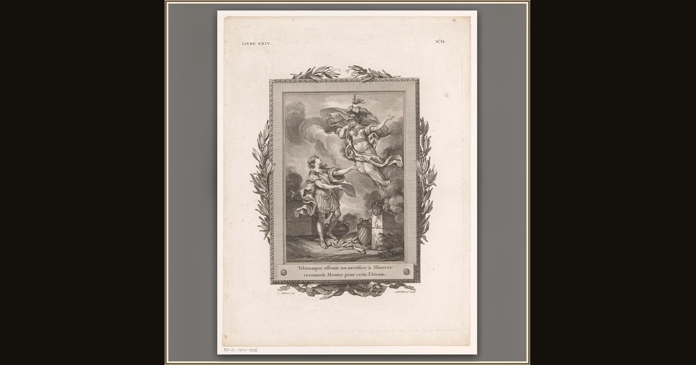

Telemachus Recognizes Athena in Mentor
Jean-Baptiste Tilliard, after Charles Monnet · 1785 · Rijksmuseum · Amsterdam, Netherlands
As Telemachus makes his offering, he suddenly understands that his wise friend Mentor has been the goddess Athena all along. Explore its place in Book I of the Odyssey.